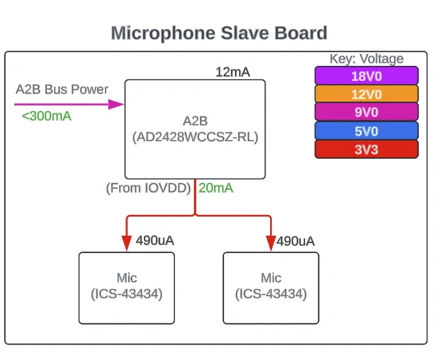

RIT Electric Vehicle Team
Microphone board PCB
My part of a six-person team project: the board that records stereo audio for an electric vehicle audio system.

The system
The audio driver records and plays back sound on an electric vehicle. A main board with an STM32F446 microcontroller, an SD card, and CAN connects to separate speaker and microphone boards. The boards are daisy-chained over the Automotive Audio Bus (A2B), which carries both power and audio data on a single twisted pair of wires. Each team member owned a different board.

My board
The microphone board captures left and right audio and sends it back up the bus to the main board.
- Microphones: two ICS-43434 MEMS microphones share the I2S clock and word-select lines. One microphone's channel pin is tied high and the other's low, so they take turns on the same data line as the right and left channels.
- Bus interface: an AD2428 A2B transceiver receives power from the bus and passes the audio to the main board.
- Power: the bus delivers about 7.5 V to the board. The A2B chip's built-in 3.3 V output powers both microphones. That output can supply only 20 mA, and the two microphones together draw about 1 mA (about 490 µA each), well within the limit.
- Signal details: 100 nF decoupling capacitors at each microphone, a 100 kΩ pull-down on the serial data line so it returns to a known state, and series termination resistors on the I2S lines.
- End of the chain: since this board is always the last node, it drops the second bus port and the circuitry for passing power on, and its sense pin is tied to ground.
- Testing: test points for 9 V, 3.3 V, and ground.



Beyond my board
I also researched electronic components rated for use in a vehicle and helped combine several circuit boards into one PCB to shrink the system's footprint.